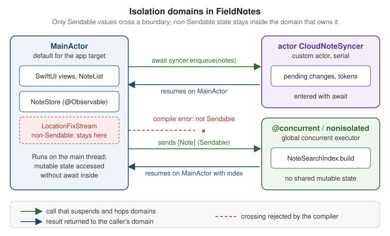

Swift Concurrency in Apps
|
This content was generated with the assistance of AI and should be verified against the official documentation before being relied on in production. |
This page covers how Swift concurrency is used in an app: which build settings a new Xcode project starts with,
where code runs by default, how SwiftUI starts and cancels asynchronous work, and how older callback-based APIs
are brought into async/await. It targets the section’s baseline: iOS, iPadOS, macOS, watchOS and
visionOS 27, built with Xcode 27 and Swift 6.4, with a deployment minimum of 26 for every
FieldNotes target. APIs that exist only from the 27 SDK onward are marked "new in 27" and guarded with
if #available(iOS 27, macOS 27, watchOS 27, visionOS 27, *).
The language itself is explained in the Swift reference and is not repeated here:
-
Async/Await and Tasks covers
asyncfunctions,async let, task groups, cancellation, task-local values and continuations as language features. -
Actors, Isolation and Sendable covers actors, global actors,
Sendable,sending, strict checking and default actor isolation (SE-0466). -
Dispatch and Legacy Concurrency covers Grand Central Dispatch, locks and how they relate to tasks.
The examples continue the FieldNotes app whose structure is set out on
App Architecture the Apple Way. There, NoteStore is an @Observable
@MainActor class and the sync service sits behind the Sendable protocol NoteSyncing.
Approachable Concurrency: the Build Settings
Swift 6.2, shipped with Xcode 26, changed the starting point for app code. Before it, an unannotated async
function ran on the global concurrent executor and every unannotated type was nonisolated. Enabling strict
checking in an app that was really single-threaded therefore produced many data-race diagnostics about code that
never actually ran concurrently. The new model is single-threaded by default, concurrent when you say so. It is
controlled by a handful of Xcode build settings, described in the Xcode build settings reference:
| Build setting | Name in Xcode | Effect (from the build settings reference) |
|---|---|---|
|
Default Actor Isolation |
Controls default actor isolation for unannotated code. With |
|
Approachable Concurrency |
Enables the upcoming features |
|
nonisolated(nonsending) By Default |
Runs nonisolated |
|
Infer Isolated Conformances |
Infers conformances of global-actor-isolated types as isolated to that actor, unless the conformance is
explicitly |
|
Strict Concurrency Checking |
Minimal, Targeted or Complete; always Complete (and errors, not warnings) in the Swift 6 language mode. |
|
Swift Language Version |
The language mode: 5 or 6. |
Status of the "new projects default to the main actor" claim. The build settings reference describes what
SWIFT_DEFAULT_ACTOR_ISOLATION does, but not what value a new project gets. The WWDC25 session Embracing Swift
concurrency says that main-actor-by-default "is enabled by default for new app projects created with Xcode 26".
It also recommends that all projects adopt Approachable Concurrency, and that modules that mainly interact with
the UI, such as the main app module, set the default actor isolation to MainActor. FieldNotes follows that
recommendation explicitly rather than relying on a template default:
// FieldNotes/Config/FieldNotes.xcconfig -- app targets (FieldNotes, FieldNotesWatch)
SWIFT_VERSION = 6
SWIFT_DEFAULT_ACTOR_ISOLATION = MainActor
SWIFT_APPROACHABLE_CONCURRENCY = YESTo check what a target actually resolves to (for example on CI, or after upgrading an older project), ask
xcodebuild:
xcodebuild -project FieldNotes.xcodeproj -scheme FieldNotes -showBuildSettings \
| grep -E 'SWIFT_(VERSION|DEFAULT_ACTOR_ISOLATION|APPROACHABLE_CONCURRENCY|STRICT_CONCURRENCY) 'The same settings in a Swift package
Xcode build settings don’t apply to Swift packages. FieldNotesKit and FieldNotesUI declare the equivalents in
their manifests. FieldNotesUI is all views, so it gets main-actor default isolation like the app. The services
module stays nonisolated by default, because it contains the sync actor and background work, but it opts into the
approachable-concurrency features that matter most:
// Packages/FieldNotesKit/Package.swift (targets excerpt)
.target(
name: "FieldNotesServices",
dependencies: ["FieldNotesModel"],
swiftSettings: [
.enableUpcomingFeature("NonisolatedNonsendingByDefault"),
.enableUpcomingFeature("InferIsolatedConformances"),
]
),
// Packages/FieldNotesUI/Package.swift (targets excerpt)
.target(
name: "FieldNotesUI",
dependencies: [.product(name: "FieldNotesServices", package: "FieldNotesKit")],
swiftSettings: [.defaultIsolation(MainActor.self)]
),NonisolatedNonsendingByDefault is why SummaryGenerating.summary(for:) can be called from a main-actor view
on a non-Sendable implementation. The requirement is a nonisolated async function, so under this feature it
runs on the caller’s actor and nothing crosses an isolation boundary.
What main-actor-by-default changes in FieldNotes
In the app target, every unannotated declaration is now @MainActor. Types that used to need the attribute
don’t, and global state that used to be a Swift 6 error is protected automatically:
// FieldNotes app target, SWIFT_DEFAULT_ACTOR_ISOLATION = MainActor
// Inferred @MainActor: safe to read and write from any view, no annotation needed.
var lastSyncDate: Date?
// Inferred @MainActor as well, including its methods.
@Observable
final class SyncStatus {
var isSyncing = false
func markSynced() {
isSyncing = false
lastSyncDate = .now
}
}The trade-off is that anything meant to run off the main thread must now say so, which is the subject of the next section.
Leaving the Main Actor: @concurrent and nonisolated
With main-actor default isolation, code has three places it can run, each chosen explicitly:
| Declaration | Where it runs | Use it for |
|---|---|---|
(nothing) in the app target |
The main actor |
Views, models, UI-driven logic — most of the app |
|
Synchronous: on the caller’s thread. |
Pure helpers and value types that must be callable from any domain without forcing a hop |
|
Always off any actor, on the global concurrent executor |
CPU-heavy or blocking work: parsing, indexing, image decoding, large file I/O |
FieldNotes builds a full-text search index over note bodies. On a large notebook that takes long enough to drop
frames, so the builder is @concurrent. The type itself is marked nonisolated so that main-actor default
isolation doesn’t claim it:
// FieldNotes/Search/NoteSearchIndex.swift (app target)
import FieldNotesModel
nonisolated struct NoteSearchIndex: Sendable {
private var entries: [String: Set<Note.ID>] = [:]
func noteIDs(matching word: String) -> Set<Note.ID> {
entries[word.lowercased(), default: []]
}
/// Notes containing every word of `query`, so "field trip" matches notes that mention both words.
func noteIDs(matchingAllWordsIn query: String) -> Set<Note.ID> {
let words = query.split(whereSeparator: { !$0.isLetter }).map(String.init)
guard let first = words.first else { return [] }
return words.dropFirst().reduce(noteIDs(matching: first)) { $0.intersection(noteIDs(matching: $1)) }
}
@concurrent
static func build(from notes: [Note]) async -> NoteSearchIndex {
var index = NoteSearchIndex()
for note in notes {
if Task.isCancelled { break }
for word in note.body.split(whereSeparator: { !$0.isLetter }) {
index.entries[word.lowercased(), default: []].insert(note.id)
}
}
return index
}
}The caller stays on the main actor. await is where it suspends while the index is built elsewhere, and it
resumes on the main actor to store the result:
// FieldNotes/Views/NoteSearchView.swift
struct NoteSearchView: View {
@Environment(NoteStore.self) private var store
@State private var index = NoteSearchIndex()
@State private var query = ""
private var results: [Note] {
// An empty search field shows every note; otherwise only notes matching all typed words.
guard !query.trimmingCharacters(in: .whitespaces).isEmpty else { return store.notes }
let ids = index.noteIDs(matchingAllWordsIn: query)
return store.notes.filter { ids.contains($0.id) }
}
var body: some View {
List(results) { note in
NoteRow(note: note)
}
.searchable(text: $query)
.task(id: store.notes) {
index = await NoteSearchIndex.build(from: store.notes) // hop off, then back on
}
}
}Figure: a main-actor view calling a @concurrent function
[Note] is Sendable, so it may cross Note over Main: Suspended: the main thread is free
to render frames and handle input Pool->>Pool: tokenize bodies, fill entries Pool-->>Main: return NoteSearchIndex (Sendable) Main->>Main: resume on the main actor
index = result, SwiftUI redraws
The [Note] argument and the NoteSearchIndex result are the only values that cross, and both are Sendable.
Passing a non-Sendable main-actor object, such as a view model class, into build(from:) would be a
compile-time error in the Swift 6 language mode. That is the data-race safety guarantee at work.
Figure: isolation domains in FieldNotes

The custom actor in the figure is the sync engine. It serializes access to its own pending-change queue, and the
main-actor store enters it with await:
// Packages/FieldNotesKit/Sources/FieldNotesServices/CloudNoteSyncer.swift
import FieldNotesModel
public actor CloudNoteSyncer: NoteSyncing {
private var pendingChanges: [Note] = []
public init() {}
public func enqueue(_ notes: [Note]) {
pendingChanges.append(contentsOf: notes)
}
public func sync() async throws {
let batch = pendingChanges
pendingChanges.removeAll()
// Upload `batch`; networking is covered on the Networking page.
_ = batch
}
}Actors are Sendable by construction, which is why NoteSyncing can require Sendable and CloudNoteSyncer
still conforms. The upload itself is written on Networking: URLSession, Network Framework and ATS.
SwiftUI Tasks
SwiftUI views start asynchronous work through view modifiers rather than by creating Tasks in onAppear.
The modifiers tie the task’s lifetime to the view: SwiftUI starts it before the view appears and cancels it
automatically when the view disappears.
.task(id:): load, and reload when the input changes
task(id:name:priority:file:line:_:) adds one more rule. When the id value changes, SwiftUI cancels the running
task and starts a new one. This is the right tool for "load the notes of the selected notebook". Choosing another
notebook cancels the stale load, so its results never overwrite the new ones:
// FieldNotes/Persistence/NoteArchive.swift (app target)
import Foundation
import FieldNotesModel
nonisolated struct NoteArchive: Sendable {
let directory: URL
@concurrent
func notes(in notebookID: Notebook.ID?) async throws -> [Note] {
let file = directory.appending(path: "\(notebookID?.uuidString ?? "inbox").fieldnotes")
let data = try Data(contentsOf: file)
try Task.checkCancellation()
return try NoteFileFormat.decode(data) // file format: see page 23
}
}
// FieldNotes/Views/NoteList.swift (excerpt)
struct NoteList: View {
@Environment(NoteStore.self) private var store
@State private var loadError: (any Error)?
private let archive = NoteArchive(directory: .documentsDirectory)
let notebookID: Notebook.ID?
var body: some View {
List(store.notes.filter { $0.notebookID == notebookID }) { NoteRow(note: $0) }
.task(id: notebookID, name: "Load notebook") {
do {
let loaded = try await archive.notes(in: notebookID)
store.notes.removeAll { $0.notebookID == notebookID }
store.notes.append(contentsOf: loaded)
} catch is CancellationError {
// The user picked another notebook, or the view went away: nothing to do.
} catch {
loadError = error
}
}
}
}NoteFileFormat, the on-disk format, is defined on
Preferences, Files and Document-Based Apps. Three details are worth noting. Cancellation in Swift is cooperative, so notes(in:) calls
Task.checkCancellation() after the blocking read rather than relying on SwiftUI to stop it. The closure is
isolated to the main actor like the view, so it mutates store.notes without await. And the name: argument
labels the task in debugging tools (see Named tasks below). The file and line parameters have default
values and are never passed by hand.
The id-less task(name:priority:file:line:_:) starts once per appearance. Use it for work that doesn’t depend
on an input, such as listening to a stream for as long as a view is on screen (shown with AsyncStream
below). Both modifiers take the same name and priority parameters.
Task.immediate: start synchronously, then suspend
A plain Task { } created from a button action is enqueued. Its first line runs only after the current event
handler returns, possibly after a frame has already been drawn. Task.immediate, available from the 26 SDK and
so usable at FieldNotes' deployment minimum, starts running synchronously in the caller’s context until its
first real suspension point. FieldNotes uses it so the Sync Now button shows its progress state in the same
frame as the tap:
// FieldNotes/Views/SyncButton.swift
struct SyncButton: View {
@Environment(NoteStore.self) private var store
@State private var isSyncing = false
var body: some View {
Button("Sync Now", systemImage: "arrow.triangle.2.circlepath") {
Task.immediate(name: "Manual sync") {
isSyncing = true // runs before the action returns
defer { isSyncing = false }
do {
try await store.refresh() // first suspension point
} catch {
// Report the failure; see the logging page.
}
}
}
.disabled(isSyncing)
}
}Task.immediate is an unstructured task. SwiftUI does not cancel it when the view disappears, which is exactly
right for a sync the user explicitly asked for, and wrong for a view-scoped load (use .task(id:) for that).
Named tasks
Every task-creating API now takes a name:, including Task(name:), Task.immediate(name:) and the SwiftUI
.task modifiers. The name shows up in the debugger and in Instruments' Swift concurrency
instruments, and code can read the current task’s name with Task.name (available from the 26 SDK):
// FieldNotes/Editing/Autosave.swift
import OSLog
let autosaveLog = Logger(subsystem: "com.example.fieldnotes", category: "autosave")
func scheduleAutosave(of note: Note, in archive: NoteArchive) -> Task<Void, any Error> {
Task(name: "Autosave \(note.title)") {
try await Task.sleep(for: .seconds(2))
try await archive.write(note)
autosaveLog.debug("Finished \(Task.name ?? "unnamed task", privacy: .public)")
}
}archive.write(_:) is NoteArchive's counterpart to notes(in:), also @concurrent. Keeping the returned
Task lets the editor cancel a pending autosave when the user keeps typing, as shown in the task tree below.
Debugging with Xcode and LLDB and
Performance and Instruments show where the names appear.
Figure: the task tree and how cancellation propagates
or notebookID changes"] -->|"SwiftUI cancels"| T0 T0["Task: 'Load notebook'
.task(id: notebookID)"] --> C1["child: async let notes
archive.notes(in:)"] T0 --> C2["child: async let pinned
archive.pinnedIDs()"] C1 --> G1["task group child
decode file 1"] C1 --> G2["task group child
decode file 2"] U["Task: 'Autosave Heron'
unstructured Task(name:)"] T0 -. "cancellation flows down
to every child" .-> C1 T0 -. "cancellation" .-> C2 C1 -. "cancellation" .-> G1 C1 -. "cancellation" .-> G2 T0 -. "NOT propagated:
cancel via the stored handle" .-x U
Structured children created with async let or a task group inherit their parent’s cancellation, and the parent
can’t finish until they do. Cancelling the SwiftUI task therefore cancels the whole subtree. Unstructured tasks,
created with Task(name:) or Task.immediate, are roots of their own trees and are cancelled only through
their handle:
// FieldNotes/Views/NoteEditor.swift (excerpt)
@State private var pendingAutosave: Task<Void, any Error>?
func noteDidChange(_ note: Note) {
pendingAutosave?.cancel() // not a child: cancel explicitly
pendingAutosave = scheduleAutosave(of: note, in: archive)
}Bridging Older APIs
Many APIs an app talks to predate async/await: in-house SDKs, third-party libraries, and delegate-based
system frameworks. Objective-C methods with completion handlers are imported into Swift as async methods
automatically, as explained on Mixing Swift, Objective-C and C++
in an App. The two cases left are Swift closure-based APIs and delegates.
Completion handlers: withCheckedContinuation
A continuation suspends the current task until a callback resumes it, exactly once. FieldNotes still uses an
older, closure-based thumbnail renderer from its first version. The wrapper turns it into an async function:
// FieldNotes/Legacy/ThumbnailRenderer+Async.swift
import SwiftUI
// The old API: calls `completion` exactly once, on an arbitrary queue.
final class ThumbnailRenderer: Sendable {
func renderThumbnail(for note: Note,
completion: @escaping @Sendable (CGImage?) -> Void) { /* ... */ }
}
extension ThumbnailRenderer {
func thumbnail(for note: Note) async -> CGImage? {
await withCheckedContinuation { continuation in
renderThumbnail(for: note) { image in
continuation.resume(returning: image)
}
}
}
}The checked variant traps with a clear message if the continuation is resumed twice, and logs a warning if it
is never resumed. Both are bugs in the wrapper, and the checks catch them during development. For an API that
reports errors, withCheckedThrowingContinuation resumes with resume(throwing:), or resume(with:) when the
callback already delivers a Result:
// LegacyExportClient.export(noteID:completion:) calls back once with a Result<URL, any Error>.
extension LegacyExportClient {
func export(_ note: Note) async throws -> URL {
try await withCheckedThrowingContinuation { continuation in
export(noteID: note.id) { (result: Result<URL, any Error>) in
continuation.resume(with: result)
}
}
}
}The older overloads that take an explicit isolation: parameter are listed as deprecated on the Concurrency
page. Call the versions without it, as above.
Delegates: AsyncStream
A delegate delivers many values over time, so a single continuation doesn’t fit. AsyncStream does. Its
continuation’s yield(_:) can be called any number of times from the delegate callbacks, and the consumer reads
the values with for await. FieldNotes tags a note with the user’s location while the editor is open. Core
Location’s CLLocationUpdate.liveUpdates already provides an async sequence, and
Location and Maps uses it. The delegate version is shown here because
the same pattern wraps any delegate API:
// FieldNotes/Location/LocationFixStream.swift
import CoreLocation
nonisolated final class LocationFixStream: NSObject, CLLocationManagerDelegate {
private var continuation: AsyncStream<CLLocation>.Continuation?
private let manager = CLLocationManager()
override init() {
super.init()
manager.delegate = self
}
/// Starts location updates and returns a fresh stream of fixes. A stream can be iterated only once and
/// ends for good when it finishes or its consuming task is cancelled, so every `start()` makes a new one.
func start() -> AsyncStream<CLLocation> {
continuation?.finish()
let (stream, continuation) = AsyncStream.makeStream(of: CLLocation.self,
bufferingPolicy: .bufferingNewest(1))
self.continuation = continuation
manager.requestWhenInUseAuthorization()
manager.startUpdatingLocation()
return stream
}
func stop() {
manager.stopUpdatingLocation()
continuation?.finish()
continuation = nil
}
func locationManager(_ manager: CLLocationManager, didUpdateLocations locations: [CLLocation]) {
for location in locations { continuation?.yield(location) }
}
}The class is declared nonisolated, so main-actor default isolation doesn’t apply and its delegate conformance
is not inferred as a main-actor-isolated one. Core Location calls the delegate on the thread where the manager was
created, and it may call it at any time. The .bufferingNewest(1) policy keeps only the latest fix if the
consumer is slow. The consumer is a view-scoped .task, so leaving the editor cancels the loop:
// FieldNotes/Views/NoteEditor.swift (excerpt)
@State private var locator = LocationFixStream()
@State private var lastFix: CLLocation?
var locationSection: some View {
LabeledContent("Location", value: lastFix.map { "\($0.coordinate.latitude), \($0.coordinate.longitude)" } ?? "--")
.task(name: "Location fixes") {
for await fix in locator.start() { // a new stream each time the editor appears
lastFix = fix
}
}
.onDisappear { locator.stop() } // stops GPS; leaving also cancels the task and ends its stream
}LocationFixStream is not Sendable: it wraps a CLLocationManager. It is created and used only from the
editor’s main-actor context, so it never crosses a boundary. This is the dashed "stays here" box in the isolation
figure above.
Swift 6.4 Additions (Xcode 27)
Swift 6.4 ships with Xcode 27. The items below are the concurrency-related changes Apple announced in the WWDC26
session What’s new in Swift (session 262). The session transcript lists exactly these five, and FieldNotes uses
each one as shown. The language changes need the Swift 6.4 compiler, not a newer OS. The only runtime API,
withTaskCancellationShield, is new in 27, and its documentation page lists iOS, iPadOS, macOS, watchOS and
visionOS 27.0.
await in defer
The old restriction on calling async functions from a defer block is gone. Cleanup that must itself suspend,
such as closing a sync session, now sits next to the code that opened it:
// FieldNotesServices, CloudNoteSyncer
// openSession(for:) returns the upload session written on the Networking page.
public func syncNotebook(_ notebook: Notebook) async throws {
let session = try await openSession(for: notebook.id)
defer { await session.close() } // allowed from Swift 6.4
try await session.upload(pendingChanges.filter { $0.notebookID == notebook.id })
}withTaskCancellationShield (new in 27)
Cancellation normally makes well-behaved code stop early. Some work must still finish, though. If the user closes
the editor halfway through writing a note to disk, stopping would corrupt the file. Inside a cancellation
shield, Task.isCancelled and Task.checkCancellation() behave as if the task were not cancelled. Keep the
shielded region short: finish or roll back, nothing more.
// FieldNotes/Persistence/NoteArchive+Save.swift
extension NoteArchive {
func saveCompletely(_ note: Note) async throws {
if #available(iOS 27, macOS 27, watchOS 27, visionOS 27, *) {
try await withTaskCancellationShield {
try await write(note) // never observes the surrounding cancellation
}
} else {
try await write(note) // 26: write(_:) avoids cancellation checks mid-file
}
}
}A companion property, Task.hasActiveCancellationShield (also new in 27), reports whether the current code is
running inside a shield. This is useful in a helper that is called both from shielded and from ordinary code:
if #available(iOS 27, macOS 27, watchOS 27, visionOS 27, *), Task.hasActiveCancellationShield {
autosaveLog.debug("Writing inside a cancellation shield")
}A warning for ignored Task errors
A Task whose closure throws, when its handle is discarded, used to swallow the error silently. Swift 6.4 warns,
and asks you to handle the error inside the task or keep the task and inspect it later:
// Warning in Swift 6.4: the error thrown by refresh() is silently ignored.
Task { try await store.refresh() }
// Fix 1: handle the error inside the task.
Task {
do { try await store.refresh() } catch { syncError = error }
}
// Fix 2: keep the task and check its result later.
let refresh = Task { try await store.refresh() }
// ...
do { try await refresh.value } catch { syncError = error }weak let in Sendable classes
A final class with a weak var used to need @unchecked Sendable, because a var is mutable. Swift 6.4
allows weak let: the reference can still become nil when the object is deallocated, but it can’t be
reassigned, so the compiler checks Sendable normally:
// FieldNotesServices
public final class ExportCoordinator: Sendable {
public weak let store: NoteStore? // NoteStore is @MainActor, therefore Sendable
public init(store: NoteStore) {
self.store = store
}
}~Sendable: saying "not Sendable" explicitly
A type can now state that it is deliberately not Sendable with ~Sendable. This documents the intent, and
unlike leaving the conformance off, it doesn’t stop a subclass from being Sendable:
// FieldNotesServices: a mutable, single-owner buffer of unsaved edits.
public class DraftBuffer: ~Sendable {
public var pendingEdits: [String] = []
public init() {}
}
// A subclass that protects its own state can still opt in.
public final class LockedDraftBuffer: DraftBuffer, @unchecked Sendable { /* guarded by a Mutex */ }These types live in the FieldNotesServices package, which keeps nonisolated default isolation. In a main-actor
default module, DraftBuffer would be inferred @MainActor, and a global-actor-isolated class is Sendable
anyway.
Migrating an App to the Swift 6 Language Mode
The Swift 6 language mode turns strict concurrency checking from warnings into errors. Apple’s article Adopting
strict concurrency in Swift 6 apps describes it as opt-in per target: existing projects keep their language mode
when opened in a newer Xcode, and the article (written for Xcode 16) states that new projects default to the
Swift 5 mode. FieldNotes sets SWIFT_VERSION = 6 explicitly, as shown above. An older app moves over one module
at a time, and the article recommends migrating the app target first and then the modules it depends on:
-
Turn on Approachable Concurrency and, for UI modules, Default Actor Isolation = MainActor. This alone removes most diagnostics about single-threaded code.
-
Set Strict Concurrency Checking to Complete while still in the Swift 5 mode. Everything the Swift 6 mode would reject now shows up as a warning.
-
Fix the warnings, typically by making model types
Sendable, isolating shared state, or marking background work@concurrent. -
Switch Swift Language Version to 6. If a module isn’t ready, it can stay in the Swift 5 mode, and the Swift 5 and Swift 6 modules link together.
In a package, the same per-module choice is a Swift setting:
// A package target that is not migrated yet keeps the Swift 5 mode.
.target(
name: "FieldNotesLegacyImport",
swiftSettings: [.swiftLanguageMode(.v5)]
),The fixes follow a small number of patterns. A dependency that has not adopted Sendable annotations can be
imported with @preconcurrency, which downgrades diagnostics about its types until it catches up:
// Before: a global cache, an error in the Swift 6 mode outside a main-actor-default module.
var thumbnailCache: [Note.ID: CGImage] = [:]
// After (package code): make the state belong to an actor...
@MainActor var thumbnailCache: [Note.ID: CGImage] = [:]
// ...and quiet a not-yet-annotated dependency without giving up checking elsewhere.
@preconcurrency import LegacyExportKitApple’s Updating an app to use strict concurrency sample contains an app in both states, before and after the
migration, to compare side by side. The Swift.org migration guide covers every diagnostic in depth, and
Actors, Isolation and Sendable explains
@preconcurrency, @unchecked Sendable and sending as language features.
Where Combine Stands
Combine is still a supported framework. Its documentation page is current and the framework ships in the 27 SDKs with no deprecation. But new FieldNotes code doesn’t use it:
-
State that views observe uses Observation (
@Observable), which replacedObservableObjectand@Publishedas SwiftUI’s model mechanism. See App Architecture the Apple Way. -
Streams of events use
AsyncSequence, such asAsyncStreamorNotificationCenter'snotifications(named:object:), consumed withfor awaitinside a.task:
.task(name: "Day changes") {
for await _ in NotificationCenter.default.notifications(named: .NSCalendarDayChanged) {
store.notes.sort { $0.createdAt > $1.createdAt }
}
}Existing Combine publishers don’t need rewriting to interoperate. Every publisher exposes values, an
AsyncSequence of its output, so a Combine-based component can feed async code directly. FieldNotes' autosave
timer, written with Combine in its first version, is consumed like this:
// FieldNotes/Views/NoteEditor.swift (excerpt)
import Combine
.task(name: "Periodic autosave") {
let ticks = Timer.publish(every: 30, on: .main, in: .common).autoconnect()
for await _ in ticks.values {
noteDidChange(currentNote)
}
}The reverse direction still works as well. SwiftUI’s onReceive(_:perform:) subscribes a view to any publisher
whose failure type is Never:
.onReceive(NotificationCenter.default.publisher(for: .NSCalendarDayChanged)) { _ in
store.notes.sort { $0.createdAt > $1.createdAt }
}The practical rule is to keep working Combine code where it is, bridge it with .values at the boundary, and
write new streams as AsyncSequences.
References
-
Apple Developer Documentation — immediate(name:priority:executorPreference:operation:)
-
Apple Developer Documentation -- task(name:priority:file:line:_:)
-
Apple Developer Documentation -- task(id:name:priority:file:line:_:)
-
Apple Developer Documentation -- withCheckedContinuation(function:_:)
-
Apple Developer Documentation -- withCheckedThrowingContinuation(function:_:)
-
Apple Developer Documentation — makeStream(of:bufferingPolicy:)
-
Apple Developer Documentation — withTaskCancellationShield(operation:)
-
Apple Developer Documentation — notifications(named:object:)
-
Apple Developer Documentation — Adopting strict concurrency in Swift 6 apps
-
Apple Developer Documentation — Updating an app to use strict concurrency